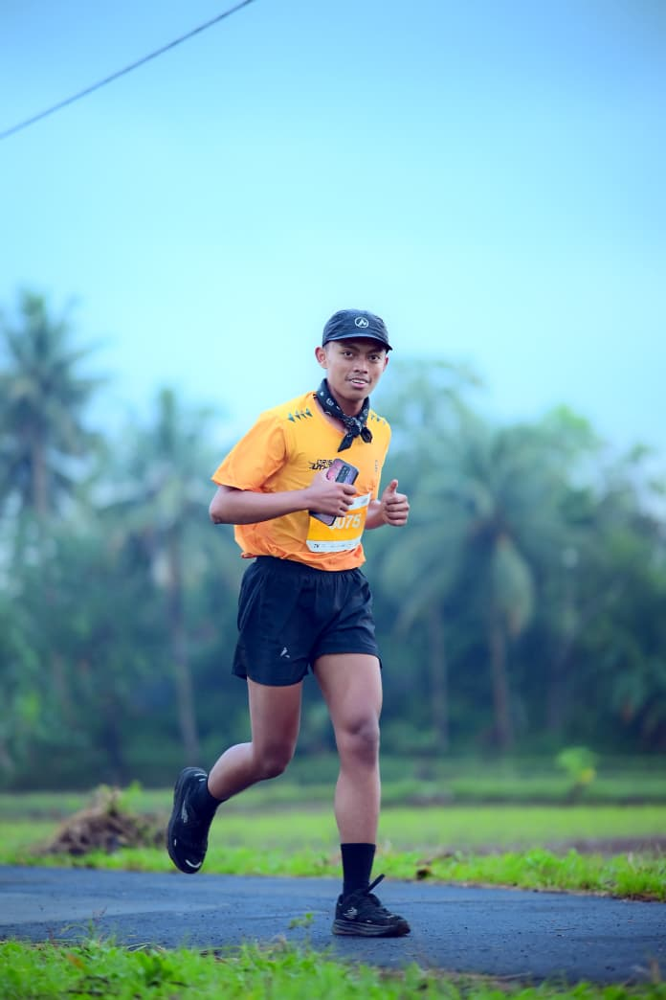

Mahasiswa Informatika & Gemar Olahraga

Halo, saya Nabil Maulidan. Saat ini saya sedang menempuh perjalanan akademik di semester awal pada program studi Teknik Informatika Universitas Siber Asia untuk kelas perkuliahan IF208. Di samping menjalankan aktivitas perkuliahan online secara mandiri, saya juga bekerja penuh waktu sebagai seorang Operator NOC (Network Operations Center). Tanggung jawab harian saya berfokus pada pengawasan stabilitas jaringan, manajemen latensi perangkat, serta penanganan gangguan infrastruktur distribusi data operasional.
Melalui mata kuliah Pemrograman Web I yang dibimbing langsung oleh dosen kita, Pak Riad Sahara, S.SI., M.T., saya mengeksplorasi langkah penyusunan kode halaman web dari tingkat paling dasar. Di luar kesibukan memonitor perangkat server dan menulis script jaringan, saya aktif meluangkan waktu untuk olahraga lari demi menjaga kesehatan fisik dan kebugaran tubuh tetap seimbang.
| Jenjang Sekolah | Institusi / Universitas | Periode Belajar |
|---|---|---|
| S1 Teknik Informatika | Universitas Siber Asia (UNSIA) | 2026 |
| Sekolah Menengah | SMK YPC TASIKMALAYA | 2024/2025 |
| Hobi | Keterangan |
|---|---|
| Trail Adventure | Saya suka yang nuansa alam dan menantang dengan mengikuti Trail Adventure |
| Sepedaan (Cycling) | Saya suka menjelajah tiap kilometernya |
| Trail Run | Dikarenakan saat ini bisa ekxplor ke gunung-gunung atau alam yang ada di jawa barat |
Berikut adalah representasi visual dari aktivitas serta olahraga harian yang saya tekuni:
Berikut adalah peyesuaian link ke arah luar sebagai berikut: